A detailed description of the various observing modes, RMS noise, and durations is available at the following web page: Heterodyne Observing Modes.
Even though the information is not required in order to set up a science program, experienced as well as novice JCMT observers are encouraged to read the document as general background information.
If after reading this guide you have any questions about preparing your observations, please consult with your "Friend of the Project", or email jcmtot@eaobservatory.org.
To open up the heterodyne library go to the JCMT OT root window "File" menu and click on “Open ACSIS library”:
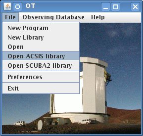
A window will pop up containing a list of folders. It is from this library that we can copy MSBs to be used in our program. For more information, please see the ACSIS Library section.
This chapter will run through an example MSB. First open the folder titled "Stares" within the ACSIS Library. Once that folder has expanded select the MSB labeled "Beam-switch stare (1X) " and click "Copy" on the toolbar.
Now go back to your science program window, and click on "Paste". The MSB will be dropped into your science program. Remember you can save your progress using the "File→Save" menu option in your science program window.
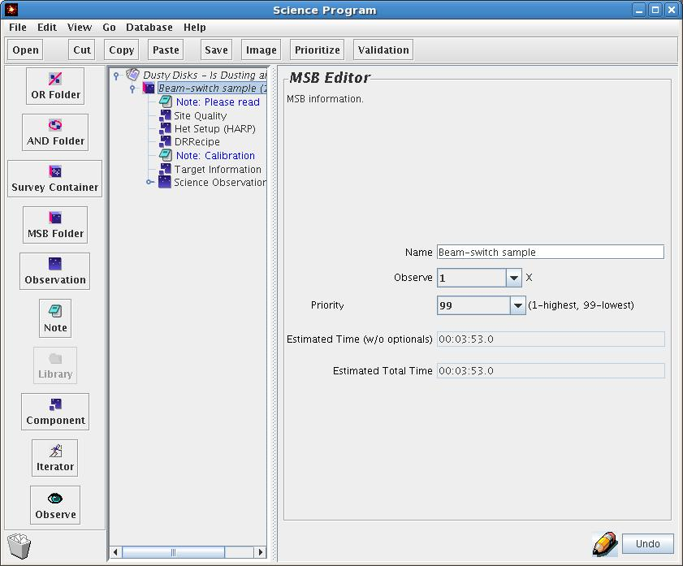
Click on the title of the MSB. This will activate the MSB editor panel on the right section of your window. The properties of an MSB are very simple:
It has a title, at the moment "Beam-switch stare". When preparing your own MSB, this title should be changed to something meaningful describing the observation, usually with target name. Examples might be "B/SW observation of OMC1" or "3 point grid of M83". Please take the time to do this — it really helps the person doing the observing.
A pull down menu with an Observe counter. Leave that to 1 for the time being.
The priority of the MSB. Note that this only affects the internal priority of your MSBs — not the priority allocated to your entire project by the TAC. So if you had two different MSBs that rose to the top of the scheduling queue and one had priority "1" and the other "99", the one marked "1" will normally be observed first. If all your MSBs are of equal interest to you, just don't bother changing the default.
Bear in mind though that MSB selection is an operational decision — marking your MSBs with priorities 1, 2, 3 etc. is no guarantee that they will be done in precisely that order. For example, your lower-priority MSBs could be done because they are observable at a time of day where there is not much else in the queue, whereas your high-priority MSBs could be competing against the top-ranked project. Also, the observer / telescope operator may sometimes select a lower priority MSB because it is the most efficient choice at the time, for example because of its duration or position on the sky.
An estimate of how long the MSB will take to observe is also displayed.
Before moving on you should also be able to complete the note component and the site quality component which is described further in the Creating Your Program chapter.
If you click on the "Het Setup" component you will see the window below. The purpose of this component is to configurate the required heterodyne instrument (the ‘front end’) and ACSIS (the ‘back end’) for your observation.
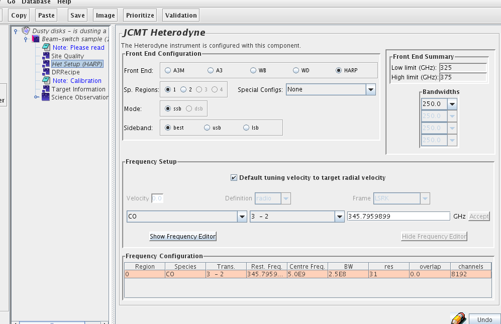
The first item in the "Het Setup" component enables you to choose the required receiver or Front End. The tuning/frequency range over which the selected receiver can be tuned is displayed in the Front End Summary box in the top-right corner.
The Sp.(ectral) regions box allows the selection of multiple spectral windows. Multiple spectral regions are especially useful if you wish to observe simultaneously two to four spectral lines which lie within the same 1.8 GHz pass-band, e.g. H2D+ at 372.4 GHz and N2H+ at 372.67 GHz. Commonly used line combinations and configurations are listed in the Special Config(uration)s pull-down menu to the right, and are described here. If the configuration you wish is not in the list, you can create your own using the Frequency Editor described below. The Frequency Editor tool is shown and hidden using the buttons further down the window. Also, please send a message to your "Friend of the Project" so we can perhaps add this configuration to the list in the OT.
The Bandwidths menu item allows the selection of the required bandwidth (in MHz) for each Spectral Region. The resulting spectral resolution (in kHz) is automatically updated in the "res" entry in the Frequency Configuration table at the bottom of the "Het Setup" panel.
The Mode box allows a choice between double sideband (DSB) and single sideband (SSB) operation. Note that only Receiver W allows a choice between SSB and DSB: Receiver A is a DSB receiver and HARP an SSB receiver.
The Sideband menu allows the choice of sideband. Sideband suppression is not absolute in the SSB receivers, so the user should avoid, if possible, the situation where the unwanted sideband corresponds to a frequency where the zenith opacity or receiver noise is high.
In most cases, however, you could simply select "best". Note that when "best" is selected, the OT will assume USB operation, but the determination of which sideband is best will be made at the telescope when the observation is performed.
Tuning of the receiver requires a rest frequency and a velocity. If the aim is to observe a specific molecular transition, you should use the pull-down lists of molecules and transitions to generate the frequency. (If the particular line/transition you are interested in is not in the list, please send an email to jcmtot@eaobservatory.org so that the line can be added for the next release.)
In the example above the CO (3-2) line has been selected. Alternately, the tuning frequency may be specified explicitly in GHz. The frequency will appear in RED until the Accept button is clicked. This is essential to ensure acceptance of the input. This method will also result in the phrase 'No line' appearing in the molecule and transition fields, even if the frequency does in fact correspond to a known transition. (Look-up occurs from molecule/transition to frequency only — no look-up is done in the opposite direction).
The example below shows a special configuration (HARP_H2DN2H_250X2) with the H2D+ 1(1 0 0)-1(1 1 0) transition at 372.4 GHz, and the N2H+ 4-3 transition at 372.7 GHz, both using the 250 MHz bandwidth mode, observed simultaneously.
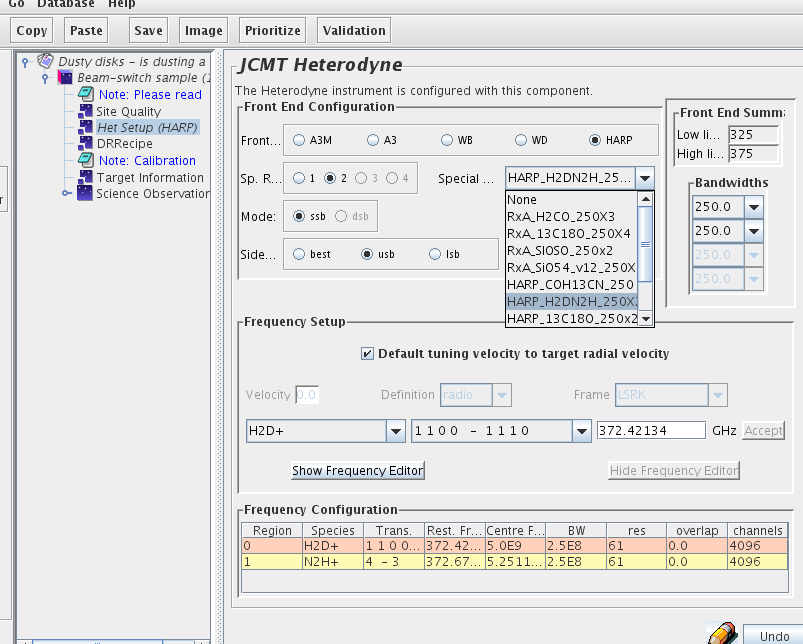
The velocity of the target may be entered either here or in the Target Information component; this second option is activated by ticking the box marked Default tuning velocity to target velocity. If entering the velocity here you must also specify the Velocity Definition and Velocity Frame from the two pull-down menus, and click the "Accept" button (to the right of the frequency field). (Note that the velocity will appear in RED until you click on the Accept button. Failure to click on the Accept button will mean the velocity you entered will be lost.)
If your source has a very large radial velocity, you should:
Select the receiver within whose tuning range the (red-shifted) line will fall. For example, at a redshift of 2.0, the neutral carbon [CI] J=2-1 line, whose rest frequency is 809 GHz, will fall into the tuning range of Receiver A.
Specify the radial velocity of the source, as above, either in the "Het. Setup" velocity field, or in the "Target Information" velocity field. (If you choose the latter, make sure the "Target Information" component is at the same level as the "Het. Setup" component, and not embedded in the observation sequence.) If you enter the velocity in the "Het. Setup" component, be sure to click the "Accept" button before proceeding.
The OT now corrects its look up table of transitions for the entered velocity. Select a molecule and transition from the pull-down menu, or enter the rest frequency of the spectral line (and click the "Accept" button). Beware, however, that if you enter a value manually into the frequency field, the OT will not check to see if the red-shifted line is in the tuning range of the receiver you selected.
For the majority of users this window will provide enough information/options to set up an observation. In rare cases — when trying to configure the backend for multiple lines, multiple resolution windows, etc. — you may need to use the Frequency Editor
With the rapid data acquisition rates now afforded by HARP and ACSIS, reducing data by hand has become a very slow and tedious process. Automatic data reduction pipelines have become a powerful tool for carrying out these repetitive tasks. ORAC-DR has been developed for reducing and combining JCMT data, primarily for producing "preview" images for assessing data quality at the telescope, but it can also be used for the final reduction. It is used to generate reduced data products for the JCMT Science Archive, so the configuration chosen here is important because it will affect the quality of these products in the archive. The reduced products will be made available to you through the archive within a day or two of each MSB being observed.
The "DR Recipe" component is used to specify the recipe that is to be used by ORAC-DR for reducing the data. ORAC-DR uses recipes to carry out all the usual reduction steps that were once carried out by hand. Note that these recipes are still under development and thus are likely to change and evolve. The example in the figure below shows the "DR Recipe" component positioned underneath the "Het Setup" component, although it need not be positioned exactly here. (Note that the "DR Recipe" component needs to be paired with a "Het Setup" component, however.) Open the DR Recipe component by clicking on it. The bottom portion of the window displays a list of the available recipes, with a very short description of each. (See below for a fuller description.) Click on the desired recipe, then click the "Set" button in the top portion of the window corresponding to the desired observing mode.
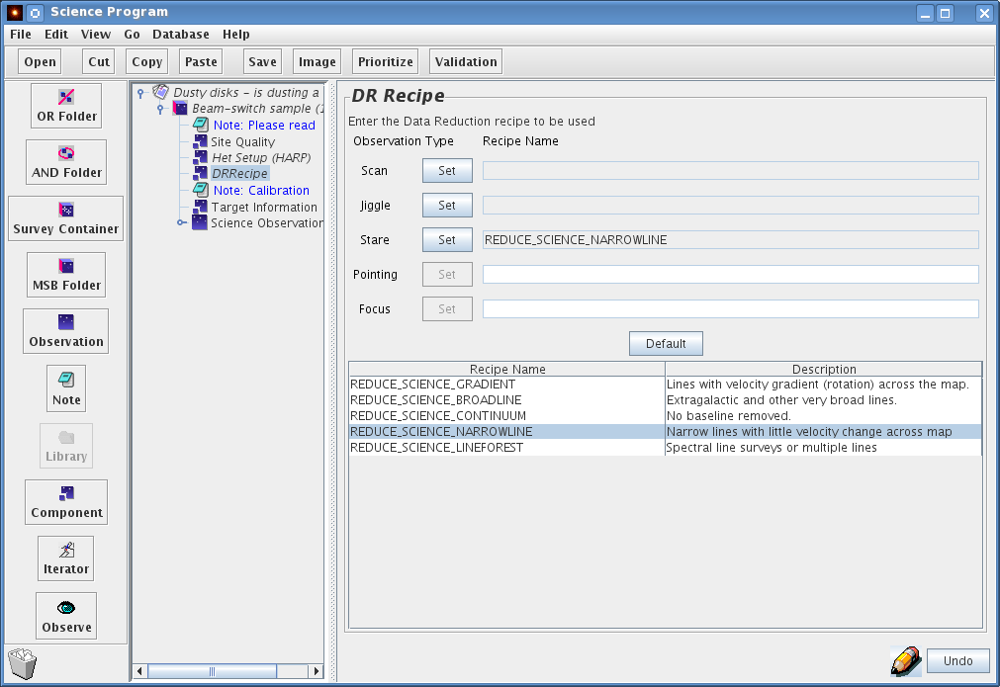
Recipe names primarily reflect the method used for fitting a baseline, since how this step is carried out differs depending on the line profile(s) expected. Effectively the recipe chosen tells the fitting routine how to deal with baseline features. To illustrate this imagine a narrow spike on a broad profile: this can be a narrow line on a broad baseline wiggle, a noise spike on a broad line, or a core plus outflow profile. This process is tricky in this sense: the baseline fitting can easily remove a feature of interest from the preview image. Observers should always go back and inspect the raw data carefully to assess the accuracy of the preview images and pipeline reduction. For more information please see the Heterodyne Data Reduction Cookbook.
Note that for all observations the outer ~5% of channels on either side typically are too noisy to be useful and are excluded from the reduction described below. Typically, smoothing and clump-finding algorithms are used to exclude emission-free regions from the total intensity and intensity weighted velocity collapses. These moments maps are thus derived based on the line widths of each spectrum. The exact methods differ from recipe to recipe and are still under investigation and development. Specifically the is aim to provide the observer with useful preview images that are representative of their data.
The following standard reduction recipes are currently being developed for use with the ORAC-DR pipeline, with an emphasis on scan-map data. An outline is provided below, but expect changes and redesigns as we gain experience. The main purpose of the routines is to
before collapsing the cube into e.g. total intensity and intensity weighted velocity images.
Intended for nearby galaxies and sources which have a significant velocity gradient (rotation) across the field of view. Assumes line widths in excess of 25 channels (~10 km/s @ BW=1000MHz and ~1 km/s @ BW=250MHz). Baseline regions are determined for each spectrum individually.
Intended for extragalactic and other sources with very wide lines. Linear baselines are fitted to the outer 1/6 of the spectral range of the co-added cube (after truncating the outermost ~5% of the channels on each end). The integrated intensity and intensity weighted velocity map are derived from the inner 2/3 of the spectral range.
Intended for Galactic sources with not much of a velocity gradient across the field of view. Baseline regions are determined from a global average spectrum. This single set of regions is used to fit the baseline for all spectra in the cubes.
Intended for spectral-line surveys, or where multiple (narrow) spectral lines are expected within the spectral range.
Intended for continuum sources, or for absorption line spectra in front of a continuum source. No baseline subtraction is done.
WARNING: Positions of astronomical objects are often wavelength-dependent. For example, the SIMBAD coordinates for IRAS16293-2224 are many arc-minutes different from the JCMT coordinates. The catalogs you may be using will have defined the astrometric positions therein on the basis of optical or infrared or radio observations. You should check that the positions now showing are valid for your sub-millimeter studies.
Click on the "Target Information" component to bring up its panel:
In this component you will enter the coordinates and velocity/redshift of the source, and the coordinates of the reference position (for position-switched observations). The "Target Type" is a pull-down menu that allows you to select RA/Dec (most common), Orbital Elements (for comets, etc.), or a Named Planet. The window changes for each selection. For RA/Dec targets, enter the R.A. and Dec. in the appropriate boxes, using colons as separators. One of several different coordinate systems can be selected with another pull-down menu, such as J2000, B1950, etc.
It is recommended that you specify the radial velocity of the source in the target component, either as a radio, optical, or relativistic velocity, or redshift (z). Note that if a velocity is specified in the "Het. Setup" component, this overrides velocities specified in the target component.
Instead of entering the source coordinates manually, you can search for them via the internet. Assuming you have an internet connection you can enter the name of your target, select the on-line catalog to search (i.e. SIMBAD or NED) from the pull-down menu, and click "Resolve Name". After a brief pause the RA and DEC co-ordinate fields should become populated with the SIMBAD/NED co-ordinates for the source. The SIMBAD/NED name for the source will also be indicated next to the "Resolve Name" button.
The above example is a beam-switched observation where the subtraction of background sky emission uses a nearby "off" position which is observed by "chopping" with the telescope's secondary mirror. (Please see the Chop Iterator section for more information.) This is also the case for the jiggle-chop and jiggle-chop offset MSBs available in the ACSIS Library. All other MSBs require the selection of a reference position.
To specify a reference position, click on "REFERENCE". The default is to enter an absolute position for the reference.
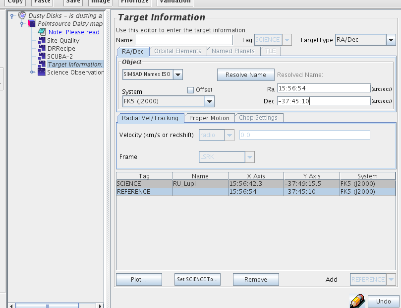
By checking the "Offset" box, you can enter the offset (in arc-seconds) from the source position
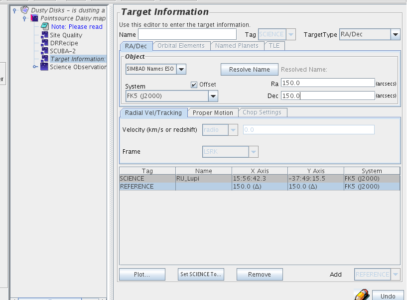
NOTE: the reference position is required for position-switched observations as the location for the sky reference. If present in beam-switched observations, the three-load calibration will be carried out at that location.
Moving objects (except planets and other bodies which are accessible in the pull down menu in the Target component) are accommodated via the Orbital Elements choice in the drop down menu. The format of these elements is fairly specific. An example is given in the figure below.
Comet Tempel-1: orbital elements


Top:
Orbital elements as found, in this example, on the
NASA JPL NEO orbit diagrams page
Bottom:
Elements specified in the Target Component Elements tab.
Note the different format for Epoch and Time of Perihelion Passage, in
particular.
The OT can use the Horizons database to resolve a given minor planet's name into elements. An example is given below.

Name resolution for moving objects:
When "Orbital elements" is the selected Target Type, the "Resolve name"
button queries the Horizons database for elements.
Note that the name format is somewhat picky and you may have to use trial and error to get something that works for a particular target. Also note that the OT uses a resource at JPL which is intended for human reading, not computer processing. As such the output format is subject to arbitrary changes, so there is no guarantee that this search feature will work or that the results are accurate; for example it is possible that elements may end up in the wrong field or omitted completely. Always double check the returned values.
Entries for the RA and Declination proper motion rates (in milli arc-seconds per year) can be made in your target component.

Proper motion
entered as milli arc-seconds per year in the target
component. These values are taken into account when slewing the
telescope.
Now click on the Observation component to bring up its panel. If you recursively open all of the toggle switches, the individual components will be displayed as a hierarchy, as shown below.

Inside the Science Observation component we see a sequence iterator. The sequence iterator doesn't do anything per se, but it is important to note that it represents the sequence of events at the telescope. The sequence iterator contains a repeat iterator, then (depending upon the observation type) perhaps a chop iterator or an offset iterator — a position-switched grid around the target, and finally a single action with an "eye" symbol. The repeat iterator allows the user to control the number of repeats carried out for a certain observation, within a single instance of the MSB — this extends the duration of the MSB and you should ensure it does not become excessively long. (If you wish to observe the whole MSB multiple times, you should use the "Observe" counter instead as described in the Components section.)
The "Flag as calibration" box should be ticked if this observation is intended as a calibration for other observations. This fact is then made known to the telescope operator who may decide not to execute the observation if a suitable calibration has recently been done already. In most cases this will not be required.
The Science Observation component also tells us how long the entire sequence will take to execute. This is an important component to check when we are creating our program, remembering our rule for the length of a MSB.
In the case of a position-switched basket weave, we have two "Scan" components under the sequence iterator. These observations typically do not require additional repeats, and they use a reference position rather than a chop. For more information on basket weave observations please see the Raster section (which includes the classical raster scan and the basket weave raster scan.
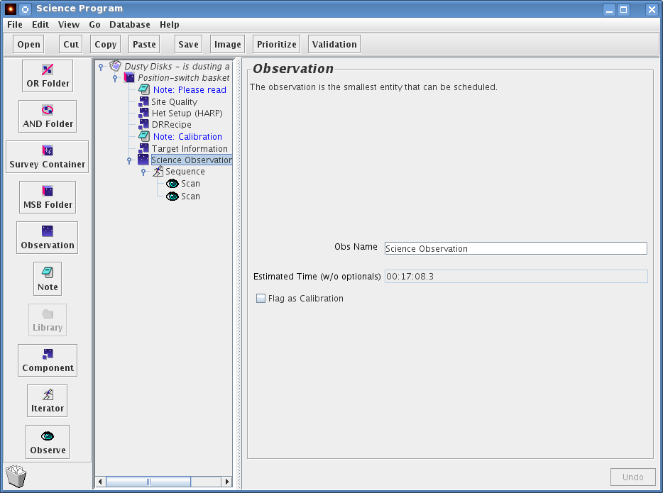
The chop iterator — used to remove background sky emission — has a list of chop configurations. The example below has one 60 arc-second chop. Each chop configuration is specified by a throw (the chop distance), an angle on the sky and the co-ordinate frame of that angle. In this example the frame is AZEL (Azimuth/Elevation) but other common options are TRACKING (RA & Dec if the target is specified in those coordinates) or FPLANE (Focal Plane).
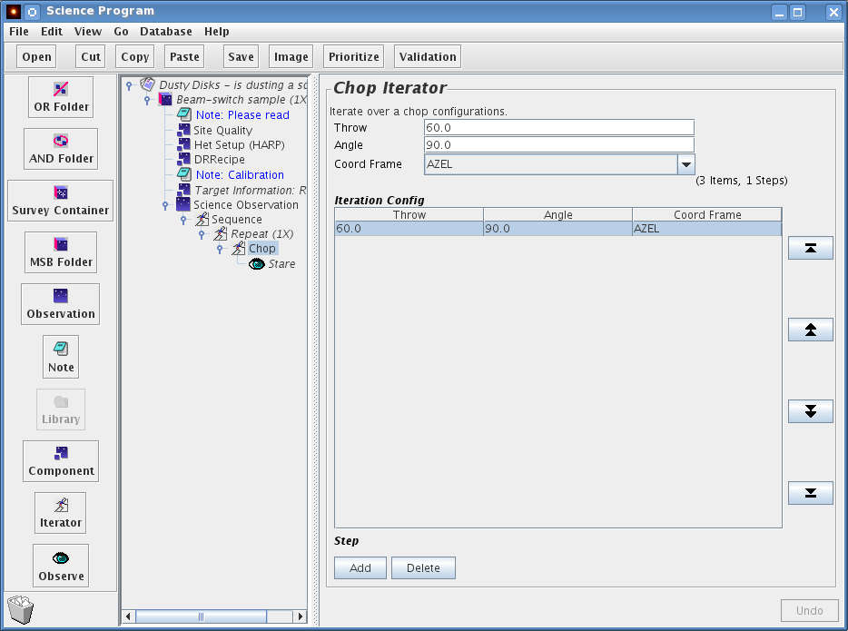
A 60 arc-second chop with an angle of 90 degrees AZEL (i.e. 60 arc-second in the azimuth direction) is typical for beam switched observations of compact sources. If the source is extended, one might want to increase the chop throw, or if the source was elongated in one direction on the sky, chop in a rotated direction relative to the RA/DEC frame.
The maximum recommended chop throw is 180 arc-seconds. There is a software limit of 240 arc-seconds. Chopping with large throws is less efficient than using small throws and also there will be a slight distortion of the beam due to observing off axis. By clicking on "Add" you can add chop configurations. Each configuration will result in a separate observation.
It's often very useful to be able to specify a position with the Target component, but to take an observation at a position offset from that specified. That can be done with the "offset" iterator. In addition, with Grid maps, a whole series of offsets can be specified in either a regular or irregular spacing.
The following example has been made by going to the ACSIS Library and copying a "Position-switch grid" MSB from the "Grids" folder into a new program.
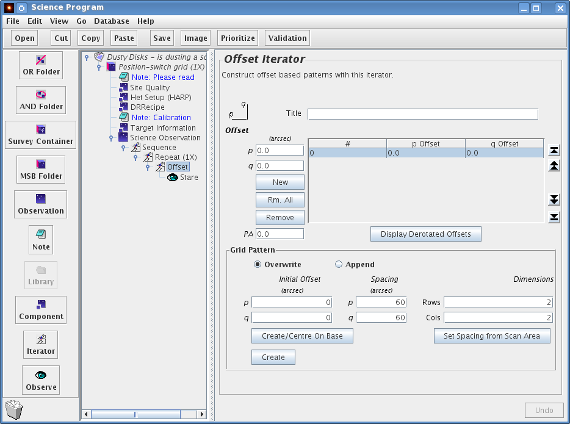
If an offset iterator is not already specified in the MSB, you can insert it below the "Sequence" iterator usually just above the stare icon. Click on the iterator below which the offset iterator is to be inserted (the "Repeat" iterator in the image above), then click on the iterator menu on the left-hand panel of the OT window and select the offset iterator. Be sure to "drag" the stare icon to the right, so that it is indented with respect to the offset iterator (as in the figure above).
The offset is specified in arc-seconds in the "p" and "q" boxes. Note the orientation of these axes to the left of the "Title" box. In an unrotated frame, "p" is in the positive R.A. direction (i.e. east) while "q" is in the declination direction (i.e. north). If a rotated frame is required, enter the position angle (measured east of north) in the "PA" box. If you then click on the "Display Derotated Offsets" button, the specified offsets in the unrotated frame will be briefly displayed in the table above.
To add more offsets, click the "New" button, and enter the offset in the "p" and "q" boxes as above. Repeat for as many positions as required.
A regular grid can also be specified using the "Grid Pattern" section of the window. See the section on Grid Maps for a description. Note that all offsets at the JCMT are defined in the Gnomonic (TAN) projection.
The science observation itself is represented within the MSB by the "Stare" eye or (in the case of classical and basket weave rasters) a "Scan" eye. Click on it to display the details of the observation. The pull down menu near the top of the right hand frame allows you to choose between beam switching and position switching. In this example we are beam switching and the chop throw was set with the Chop Iterator. In the "Secs per offset sample" box, enter the total on-source integration time per sample position in seconds.
The estimated RMS noise per channel is shown in the "Noise" box. Typical recommended on-source integration times per sample are 5 to 15 minutes. We advise to keep observing times under 15-20 minutes, at the risk of loosing observations when something goes wrong. Longer observations do have risk associated with them however they are more efficient, requiring fewer instrument set ups over longer periods of time.
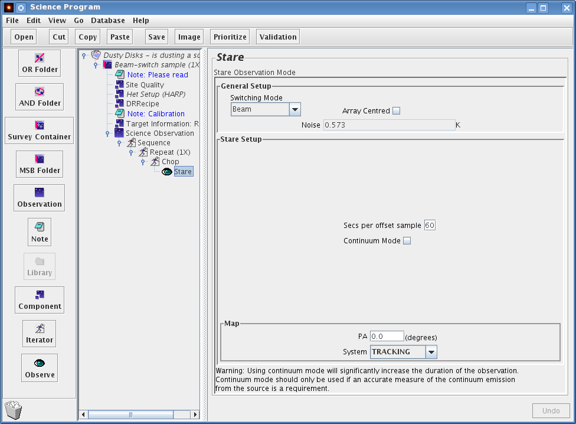
The "Continuum Mode" box can be checked if you need an accurate measurement of the continuum level. Typically this only makes sense when doing a beam-switched observation, because the switching time for position-switched observations are too long for a reliable determination of the continuum. For beam-switched observations, the effect of checking "Continuum mode" is to run the chopper much faster. This will result in higher overheads which can significantly increase the time it takes for the observation to complete. Hence, this mode should only be used when really needed. As a concrete example: the maximum time between chops typically allows for the completion of a full 9x9 jiggle with 0.1sec step, i.e. 8.1 secs. The chopper will then spend ~3 secs in the off-position, resulting in an 11-sec cycle plus some overhead. In continuum mode the chopper will move to the reference every 0.1secs and spend equal times in the 'on' and 'ref' position. A 9x9 jiggle will thus take 16.2 secs plus significantly more overheads due to transit times of the chopper. Limited testing so far suggests that the typical penalty for using continuum mode is an increase of the observing time by a factor of 1.7.
The Repeat iterator's only property is a repeat counter. This repeat counter will affect things that are inside the repeat iterator (i.e. indented under it) in turn. So if you set it to 2, your science observation consist of two spectral line stares; i.e you will end up with precisely two spectral line observations.

If you require a long integration of a source, it makes sense to break the observation down into shorter integrations of around 10 minutes or so, so that data quality can be assessed as the observation progresses. It also ensures that if the observation fails intermediate data is written out and not lost.
In practice, you set up the integration time required per spectral line observation using the stare or scan eye. If you selected the stare you should use the repeat iterator to define a sufficient number of repeats to give the total required integration time for the MSB - typically we recommend between 30 to 70 minutes. Shorter observations are recommended for ease of scheduling in a flexible queue.
The total time spent on source is then a X times then length of one MSB where X is the observe counter value which can be specified in the top level of the MSB.
Now you can see how your time usage builds up. Working our way inside out (and bottom to top):
 The stare
eye is set to an on-source integration time (and shows you the
estimated RMS noise).
The stare
eye is set to an on-source integration time (and shows you the
estimated RMS noise).
 The Repeat
iterator multiplies the number of times the stare is carried
out. If you increase it from the default of 1, don't forget to
take that into account when calculating how deep you will go.
The Repeat
iterator multiplies the number of times the stare is carried
out. If you increase it from the default of 1, don't forget to
take that into account when calculating how deep you will go.
 The observation
component shows you the estimated time of the sequence it
contains.
The observation
component shows you the estimated time of the sequence it
contains.
The MSB component will give you the estimated time of the observations inside it. For the heterodyne OT, you only need to define MSBs for your science observations. Obviously, before the observation, the telescope operator will tune the receiver (when necessary), focus the telescope, and do a pointing observation. Specific calibration instructions, for example, the observation of a spectral line standard and/or a planet should be described in the note attached to the MSB. Be sure to remember to click the "Show to Observer" tick box for the note. In conclusion, the estimated time for an MSB only includes observations of the science target — one should remember there will be instrument set up and calibration overheads on top of this when planning your observing program.
 The Science Program will
give you the estimated time of all MSBs inside it including the number
of repeats. So if you have a 1hr MSB (as in this example) and you set
the MSB counter to 2, your MSB estimated time will be 1hr and your
Science Program time will show 2hrs. Remember that different MSBs may
be observed on different nights, whereas observations within a single
MSB will be observed within a single night.
The Science Program will
give you the estimated time of all MSBs inside it including the number
of repeats. So if you have a 1hr MSB (as in this example) and you set
the MSB counter to 2, your MSB estimated time will be 1hr and your
Science Program time will show 2hrs. Remember that different MSBs may
be observed on different nights, whereas observations within a single
MSB will be observed within a single night.
So far, the various elements of the MSB have been described. We now summarize the general procedure for making your own.
Choose the corresponding MSB template from the heterodyne library and copy/paste it to your science program. Each of these is described briefly below.
Fill out the "Het Setup" component with the frontend/backend details for your observation.
Set up the "Site Quality" component, normally this means simply leaving the "allocated" button selected.
Enter the target information for your target. This step can be as simple as entering the RA/DEC and epoch. Don't forget that the name resolver and the position editor can help you out here.
Set up the "DR Recipe" component accordingly. Remember the component is used to specify the recipe that is to be used by ORAC-DR for reducing the data.
Set up the chop or offset iterator if appropriate. Again this can simply mean entering the chop throw angle and reference frame, or this iterator can be set up via the position editor.
The "Stare" eye — remember to enter the total on-source integration time per sample.
The repeat counter to give the number of repeats of the time set up in the stare eye to get your total required integration time in a single observation/MSB.
It is encouraged that MSBs are 30-70 minutes in length. If you want a total observation integration of 30 minutes on-source (per MSB), you should set up an integration time of 5 minutes in the stare eye and set the repeat counter to 6. When observing, you can then monitor the observation by inspecting the data file produced every ~13 minutes, and co-add the spectra as you go along. In general, if you want to build up long integrations, you will want the duration of the basic observation to be of the order 10 minutes ("on+off+overheads").
Set the MSB Observe counter to build up to your total integration time. You may want the duration of the basic observation to be of the order 10 minutes and an MSB to last 30-70 minutes but you might be requiring a total time on source of ten hours.
Add at least one "Show to Observer" note. This should contain additional information on the overall aims of your science program, details of required calibrations and any other special notices you want the observer and telescope operator to act upon when the observation is made.
Click on the outermost level of the MSB. In the right hand panel
you should give the MSB a meaningful name. Be aware that
observers and operator typically will see only the start of that
line in the browsing tool, hence put the most significant
information at the start. E.g.
'IRC+10216 spectral line
survey, CO molecule, transition 230.538'
'IRC+10216 spectral
line survey, CO molecule, transition 220.399'
will look
similar without expanding the name field in the
browser. Instead
'IRC+10216 230.538, spectral line survey, CO
molecule'
'IRC+10216 220.399, spectral line survey, CO
molecule'
would be a better compromise.
Below the name field, there is pull down menu labeled "Observe". This counter allows you to control how many times you want the whole MSB observed. If you want it done just once, leave this as (1x). You can set the relative priority of the MSB within your science program using the "Priority" pull down menu. Set this between 1 and 99, with 1 signifying the highest priority.
That's pretty much all you need to know to start preparing your MSB. The remainder of this primer covers the Heterodyne MSB library and advanced topics.
The heterodyne library groups the MSB templates according to whether the observation is to be a Stare, a Grid, a Jiggle-Chop, or a Scan-PSSW:
This is the most fundamental of the observing modes, in being a single spectrum observed toward at a single position. The stare can either use a position switch (Stare-PSSW) or a beam switch (Stare-BMSW). PSSW observations typically spend of order 30 secs on the source before going to the reference position for 30 secs, but they can accommodate large switches exceeding several degrees. BMSW observations by contrast offer a better sky cancellation by switching much faster between the source and reference (up to several Hertz in "continuum mode"), but are restricted to a switch of 180" at the most. Also, the telescope will nod: half the time will be spent chopping to one side of the source, half to the other side, requiring both sky positions to be free of emission.
The offset iterator can be used to observe at a position offset from the one specified in the Target Component. If you specify multiple offsets these modes will be equivalent to a Grid-PSSW or a Jiggle-Chop, although the detailed execution will be different in case of the latter (see below).
These observations are stares carried out at multiple offsets, either in a regular grid or as a series of explicit offsets. The observations from each grid point end up in a single cube, sharing calibrations and possibly offs. The observations at each position can be either position-switched or beam-switched. Position switched patterns are executed as OFF-ON(s)-ON(s)-OFF-OFF-... Grid maps are used where relatively small, sparse maps are required with longish integration times per point.
(Note: it is possible to do a grid of jiggle-maps by putting a "Jiggle-Eye" inside an "Offset" iterator. However, in this case the jiggles will be executed as fully independent observations at each grid point, resulting in independent cubes.)
This mode makes a small map by "jiggling" the secondary mirror rapidly over all the points in the map and is similar to Stare-BMSW/Stare-PSSW observations on a regular, pre-defined grid, such as a 4x4 pattern. There is an important distinction: rather than fully completing each position before going to the next, Jiggles will combine sequences of short integrations at all positions and possibly cover the whole jiggle pattern many times to build up the integration time at each point. Thus, it will typically observe multiple source positions before going to the reference position for a relatively longer time, although this is configurable through the "Separate offs" tick-box.
Jiggles are new to heterodyne observing at the JCMT, and specifically designed for HARP although useful for single receptor receivers as well.
This mode is useful for making large maps rapidly. The telescope continuously takes data while scanning across the source in a back-and-forth pattern. It will typically go to the reference between rows and an interpolation of the references on either side of the row will be used for each of the samples in the row. This mode is much more efficient for mapping large regions than Grid maps.
The primary between the Classical (scan) raster and the Basket Weave raster is the double scan component in the Basket Weave. The two scan components in the Basket Weave MSBs is to enable two scans in orthogonal directions to produce a smoother output map. Basket Weave raster maps are used by JCMT users requiring smooth spatial coverage and are thus more common.
A detailed description of the various observing modes, RMS noise, and durations is available as a document Heterodyne Observing Modes. Even though the information is not required in order to set up a science program, experienced as well as novice JCMT observers are encouraged to read the document as a general background. The discussion below concentrates on the mode-specific components in the JCMT OT.
RxA and RxW at any time observe only a single position on the sky and by default the target-position will be centered on the receptor: they are receptor-centered.
For HARP the situation is more complicated. Firstly, it has 16 receptors, each of which in principle can be aligned with the target position for receptor-centered observations. But secondly, and more to the point, the 4x4 receptor array does not have a center receptor. For regular grids or jiggles this results in maps with even dimensions, such as 16x16. The center of the map will thus fall between the center four pixels. Since the output pixels are the locations observed by the receptors, this also means that center-position of such a map will not have been observed precisely by any receptor. For fully sampled maps the consequences should not be significant, but for user-defined sparse grids they can be disastrous since possibly no receptor may come even close to the target position.
Consequently, for HARP there are three possible alignments:
The target position is placed on one of the center-four receptors. Since these receptors are offset (15",15") from the array center, this will result in strongly asymmetric maps with the target position displaced 21" towards one of the four corners. Which corner will depend on the elevation of the observations, since it depends on which of 4 possible angles, differing by 90 degrees, the k-mirror will select. Combining receptor-centered observations from different elevations may thus result in a wind-mill pattern with spectra from only 9 of the 16 receptors overlapping in all observations (see figure below). For compact targets smaller than the area mapped by a single receptor this may still be the observing mode of choice, since the whole source will be mapped by a single receptor. Which of the center-four receptors will be the "tracking receptor" is set in a telescope configuration file and is in principle not user-configurable. All patterns with names like NxN ("3x3", "4x4" etc.) are receptor-centered.

The target position is placed in the center of the array between the center-four receptors. The resulting map will be symmetric around the target position and independent of the K-mirror orientation. However, none of the receptors will align exactly with the target position, which may not be an issue for an extended source, but will probably be a serious problem for a sparse grid of a source with a point-like core. In case of a fully sampled observation using one of the special HARP jiggle patterns this mode is referred to as map-centered since the target position will be between the center-four pixels in the output map which will be either 7.5" or 6" apart depending on the pattern selected. The map-centered harp jiggle patterns are named "harp4_mc" and "harp5_mc" in the JCMT OT.
The target position is placed on one of the center-four pixels of a jiggle map, slightly offset by half a pixel in each direction from the center of the map. This mode is only available when using one of the special HARP jiggle patterns and is the counter-part to the map-centered observations above. As is the case for the receptor-centered map, discussed above, the map will be asymmetric around the target but only by one map pixel. A wind-mill pattern resulting from the K-mirror flipping by 90 degrees will only affect a 7.5" or 6" rim along the edges of the map. The pixel-centered harp jiggle patterns are named "harp4" and "harp5" in the JCMT OT.
The figure below illustrates the pixel-centered and map-centered centering for the HARP jiggles: the cross shows the location of the target position in the output map. Note that the HARP4 and HARP5 pattern, shown here offset to the top-left corner, can be offset to any other corner depending on the elevation of the observation. For receptor-centered grids the cross would be at the same location as the middle of the dark-blue postage stamp in the center of the HARP5 images. Another discussion of the HARP jiggle patterns can be found here.
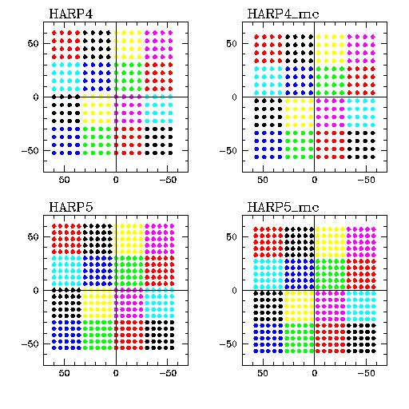
The concept of shared or separate offs almost exclusively applies to jiggle and scan maps. Offs will also be shared for position-switched grids with very short integration times (≤ 15s), but that choice is not user-configurable. Shared offs are also required for scan maps. However, jiggles can be configured either with shared or separate offs.
Shared offs means that the observations at a number of positions in the map, i.e. ons, share the sky reference, the off. This concept originates from traditional scan map observations where the telescope scans across an extended source before going to a sky reference. By necessity all positions observed along the scan will share the same sky reference or off. Since 50% of the noise observed in a spectrum (i.e. on-off) results from the off this would lead to severe 'striping' of successive rows unless the integration time in the off position is sufficiently increased to drop its noise significantly below the noise of the on measurements. Calculations show that the integration time in the off needs to be multiplied with sqrt(np), where np is the number of on positions in the row. Of course, there is nothing special about scan-maps: the same applies for any observations where a number of points share the sky reference, as is the case for HARP jiggle-maps where the full 4x4 or 5x5 jiggle pattern is observed before going to the off.
Observations benefit from shared offs in two ways and the more so the more points between the offs (the larger the scan-map). To illustrate, consider 1s observations of 16 positions (which would be a very small scan map). Separate offs would require 32s on the sky equally split between ons and offs. Using shared offs the observation needs only 16+4=20s. But also for each point individually the noise is reduced because of the longer observation of the off. Expressed in a time required to reach a particular RMS the combined effect makes shared off observations 4 times faster than separate observations in the limit of many points. More precisely, the factor is ~4/(1+2/sqrt(np)) or ~2.7 for the relatively small HARP jiggle patterns and ignoring fixed overheads (which reduce the factor to closer to ~2). Nevertheless, one night instead of two nights is a huge gain, which is why shared offs are the default for jiggle-chop observations.
The figure below shows the benefits in terms of the duration of the HARP4 jiggle observation, including realistic overheads, needed to reach a certain RMS (assumed Tsys = 250 K and frequency channels of 1 MHz). Note that shared/separate offs are only relevant within a single observation, which typically take 10-20 minutes. The figure shows that e.g. a 15min observation using shared offs (blue line) will have the same RMS noise as a 33min observation using separate offs (red line). Note that co-adding successive observations will decrease the noise with the usual sqrt(nr spectra) factor, irrespective of the shared mode chosen.

Of course, the above gain comes at a price: all 16 or 25 jiggle-positions from each receptor are correlated because they have the same sky reference (off). As long as the pixels are kept separate this is not an issue because noise remains dominated by the on measurement and the points can be regarded to be only weakly correlated. However, any operation in which pixels are combined will 'suffer' from this correlation in the sense that it will combine pixels that are not fully independent and the noise will hence not drop with the customary sqrt(np) factor. Note that this both applies to operations that use a spatial convolution (smoothing) as well as total flux measurements that sum or average over pixels such as aperture photometry. In the extreme, when averaging data over the whole footprint of a harp4 observation, the noise will be 1/4th (16 independent receptors) instead of 1/16th (196 pixels) of the noise per pixel. Finally: note that jiggle-chop continuum mode observations always will have separate offs, because the secondary will chop to the off position faster than it moves around the jiggle pattern.
In conclusion: if imaging or velocity/frequency data are the primary aim of the observations, shared offs are hugely beneficial and recommended; if accurate flux measurements over extended regions are the primary aim or the final maps will be spatially smoothed significantly, separate offs are recommended instead.
A stare denotes an observation consisting of one pointing per science target. It can be beam-switched (BMSW) or position-switched (PSSW).
If you open up the PSSW stare MSB in the heterodyne library, you will see that it contains the same elements as the BMSW MSB, with the exception of the "Chop" component. Opening the "Target Information" component, however, reveals two rows in the bottom right hand window, a SCIENCE and a REFERENCE row. Clicking on one of them allows the user to specify the co-ordinates of either the SCIENCE, or "on" position, or the REFERENCE or "off" position. The REFERENCE position can either be specified as a co-ordinate offset from the SCIENCE position, by checking the "offset" box, or as an absolute co-ordinate, by leaving the "offset" box unchecked.
Important: If you put or leave a REFERENCE position in the Target Component of a chopped observation (Stare-BMSW, Jiggle-Chop) that position will be used when doing a three-load calibration (hot-cold-sky).
For all stare modes, the total "on" integration time per stare is indicated in the "Stare" eye. Note that integration time no longer is the "on+off" time, only the "on" time.
Observations of a single science target at multiple positions are generically referred to as Grid observations. Note that the user can define any list of positions and that there is no requirement that the pointings form a regularly shaped grid. Opening the various grid MSBs in the heterodyne library shows they are similar to the Stare-PSSW or Stare-BMSW MSBs except for the addition of an Offset Iterator. This iterator enables the user to specify the required pointings for the observation.
Suppose you require three pointings along the long axis of a galaxy, at a half beam width spacing of 10 arc-seconds. Let us assume the long axis of the galaxy has a position angle of 30 degrees on the sky. First enter the position angle in the "P.A." field. The rotated frame has axes labeled "p" and "q", so in order to obtain the required pointings along our galaxy we require (p,q) offsets of (0,-10), (0,0) and (0,10). You can add a new pointing by clicking on the "New" button, and then modify the offsets via the "p" and "q" boxes directly above the "New" button. The highlighted pointing can be removed using the "Remove" button. The "Rm. all" button removes all of the user-added pointings. The arrow buttons to the right of the box displaying the pointings allow the pointings to be re-ordered. The highlighted pointing can be advanced one position up or down the pointing list, or to the top or bottom of the list by clicking on these arrow buttons. For our example, the completed "Offset" iterator will appear as shown below.
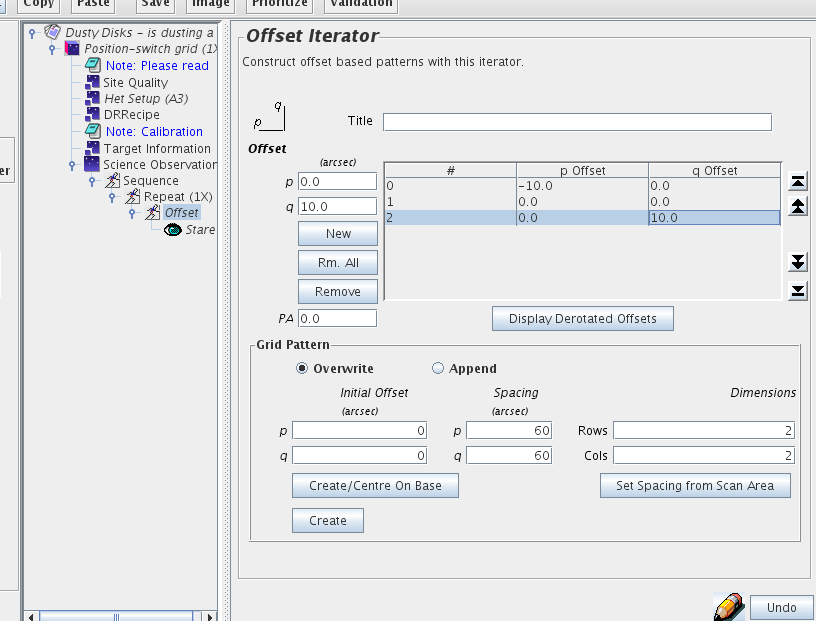
If you want to see what the offsets are in the sky frame (which will be the co-ordinate frame specified in the "target information" element), click and hold the "Display Derotated Offsets" button.
The "Offset" iterator has the ability to automatically generate regularly spaced grids without the need to enter each pointing individually. The "Grid Pattern" section of the "Offset" iterator allows the user to specify the offset of the top-left corner of the grid (i.e. most positive 'p' and 'q'), the grid point spacing, and the dimensions of the grid, in grid points. To create a 3x3 grid, with a ten arc-second spacing, you would fill in the fields of the grid pattern section as illustrated below, and then click on either "Create/Center on Base" button, or the "Create" i.e. on corner button. The pointings generated then appear in the pointing list box above.
Notice that "Create/Center on Base" chooses the the geometrical center of the grid for the (0,0) position, and ignores the contents of the "initial offset" fields. The "Create" (on corner) button, on the other hand, will place the top left pixel at the offset specified in the "initial offset" fields. For example, if you want a 2x2 grid with 10 arc-second spacing at offsets (0,0),(-10",0),(-10",-10"),(0,-10"), then set the initial offsets to p=0,q=0, spacing p=10",q=10", and dimensions 2x2, and click the "Create" button.

Jiggle observations, like Grids, map a region around a source. This mode is primarily intended for array instruments with widely spaced receptors for which 'jiggling' is needed in order to achieve Nyquist sampling. Nevertheless it is available for single-pixels receivers as well. As opposed to Grids, the secondary mirror is used to move over the points in the pattern. This allows for a fast switching of the position and makes it possible to observe the whole jiggle pattern before going to the reference position. (In "continuum mode", however, where the chop frequency is much higher, half the time is spent at the reference position.) Jiggle-chops are beam-switched observations, and hence the distance to the sky reference can be no more than 180". Jiggle-PSSW use a jiggle to maps the source, but a position-switch to move to the reference.
Opening the various chop MSBs in the heterodyne library shows they are similar to the Stare-BMSW example above except that there is a "Jiggle" eye instead of the "Stare" eye. It offers various jiggle patterns: 3x3 through 11x11 plus HARP-specific jiggles (such as HARP4 and HARP5).
Since any spacing can be specified using the NxN patterns, in order to guarantee that the target falls on one of the pixels in the output map (as opposed to between e.g. widely spaced pixels), these patterns are receptor-centered. Four special patterns are also available for making fully sampled maps with the HARP array receiver. "HARP4" and "HARP4_mc" are 4x4 patterns with 7.5" pixels designed to fill in the footprint, but slightly under Nyquist sampled, whereas "HARP5" and "HARP5_mc" are 5x5 patterns with 6" pixels, i.e. slightly better than Nyquist sampled.
HARP4 and HARP5 are pixel-centered: these will give you fully-sampled maps with the target position on one of the center 4 pixels of the output map. The resulting map will be slightly asymmetric and maps observed at different time may have a different orientation. However, the affected area will only be a single-pixel wide rim along two or more edges of the map.
HARP4_mc and HARP5_mc are map-centered: these will give you fully-sampled maps with the target position in the exact center of the output map, between the 4 central pixels. The resulting map will be symmetric around this position.
For a more extensive discussion please see Centering the Observations and the figures there.
For the NxN patterns the "Jiggle Spacing" needs to be defined by the user: typically 0.5 or 1 beam-spacing in arc-seconds. The PA and System should be left at "0.0" and "Tracking" for the typical user. Finally, the integration time for each jiggle position can be specified as "secs/jig posn". (Note that this is the total "on-source" time per position.) As for the "Stare" eye, the estimated RMS noise per channel is shown in the "Noise" box.

"Continuum mode" can be selected as is explained for the "Stare" eye. Due to the resulting increase of the time needed to complete the observation, by a factor of approximately 1.7, only check this if you really need the measurement of the continuum level.
Important: If you put or leave a REFERENCE position in the Target Component of a chopped observation (Stare-BMSW, Jiggle-Chop) that position will be used when doing a three-load calibration (hot-cold-sky).
Both Classical (scan) and Basket Weave raster scan folders can be found in the ACSIS Library.
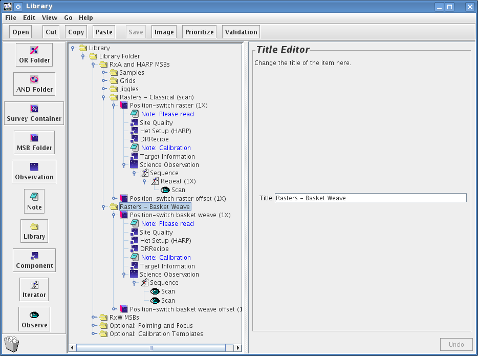
The format of the position switched scan MSB is similar to the sample MSB, except that the "Stare" eye is replaced by the "Scan" eye. The fields in the "Area" panel allow you control the size and sampling of the scan map. The resulting Nr. of samples/pixels and Nr. of scans/pixels in each dimension is shown. The total required on-source integration time per sample point can be specified in the "Sample time" box. The system will automatically break up the observations into multiple passes over the map.
Setting up scan maps is significantly different when using a non-array receiver (i.e. RxA or RxW), or an array receiver (i.e. HARP). Please see the examples below for each type of receiver.
When using a single-pixel receiver such as RxA or RxW, the "sample spacing" will be the pixel-size along scan direction of the telescope. The "scan spacing" will be the pixel-size in the cross-scan direction i.e. between the scanned rows. Be aware that there will be a pixel centered on the base position only if the number of pixels in each direction is odd. The size of the map must be a multiple of the pixel-size in each direction, and is defined as the distance between the centers of the outermost pixels!
Suppose, for example, that you want to use RxA to make a 238"x28" map. A sample spacing of 7" and scan spacing of 7" will result in a pixel map of 35x5. Note that it is customary to over-sample the scan-direction to counter-act smearing, although this often requires a re-gridding of the final map to recover the intended RMS/pixel.
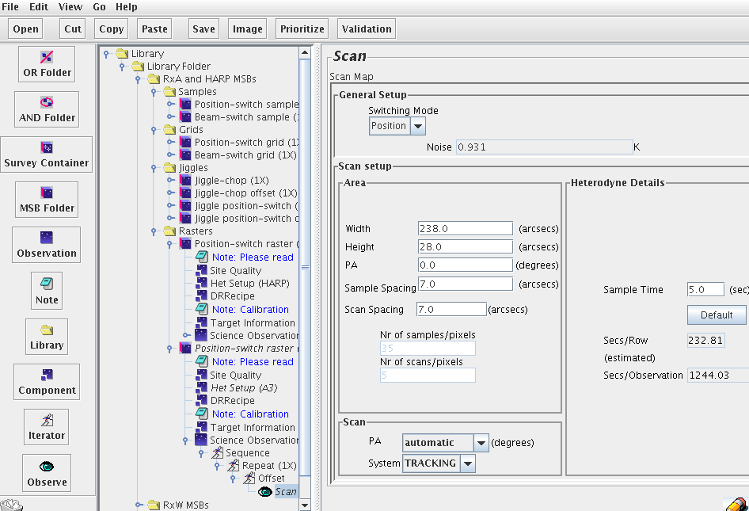
The sample time box allows the user to set the amount of time data is taken for for each map "point" as the receiver is scanned across the sky. The RMS noise per channel of the final co-added map is also indicated, as is the estimated time to complete each row and the complete map.
It is possible to set the scanning direction, but for most purposes this should be left to the default values.
HARP is a 4x4 square array of receptors, which are separated by 30". To make a scan map, the telescope scans continuously along (by default) the longest axis of the map (defined by the width and height of the map). The array is rotated by 14.04 degrees to the direction of the scan. This results in a fully sampled map, with 7.3" pixels. Thus the HARP sample spacing is set by the OT to 7.2761". At the end of a scan, the array is shifted up by the scan spacing and the telescope makes another scan across the area to be mapped. A pull-down menu allows one to set the scan spacing, so that one can step by the full array (i.e. no overlap of pixels during subsequent scans), by 3/4 array, 1/2 array, 1/4 array, 1/8 array or by a single pixel (i.e. a shift of 7.28").
A comparison of rasters made with different scan spacings is available at the following web page: HARP Rasters.
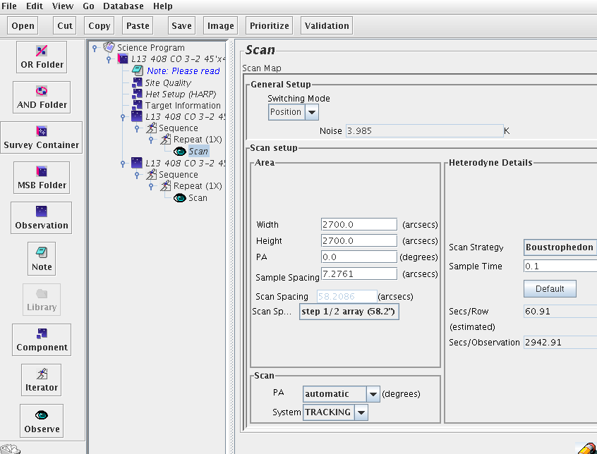
Effectively the largest single map one can make is one square degree. Larger maps can be made, but they should be broken up into smaller pieces, one piece per MSB, with an offset iterator for each piece. Note that mosaicking such large maps will likely tax most computing systems beyond their capacities.
In the lower left panel of the "Scan" window, one can specify the direction and orientation of the scan, using two pull-down menus, PA and System. For all but very special applications, the System should be left in its default, TRACKING coordinates (e.g. R.A./Dec.). If PA is left in its default state (automatic), then the telescope will scan along the longest axis of the scan box defined by width, height, and PA specified in the Area panel. One can, however, set the scan direction to any arbitrary value, by selecting user def from the PA pull-down menu, and typing in the required scan direction in degrees, where PA=0 is north and PA=90 is east.
If the scan map is to be repeated, a useful technique is to "basket weave" the scans, i.e. make a scan map by scanning along one axis of the map, and then repeat by scanning along the other axis. This minimizes striping in the resultant map. One way to do this is to edit a science observation for a scan map, set the parameters as required, then copy the entire science observation and paste the copy below the original. In the original "Scan" eye, set the SCAN PA (lower left panel) to Along Width. Do the same in the copied "Scan" eye, but set the SCAN PA to Along Height.
Sample Time: The sample time is the total integration time per pixel in the completed map. The minimum time depends on the setup of the backend. It is about 0.3 seconds with 8192 channels (e.g. single 250 MHz band), but can be as low as 0.1 second with 2048 channels. There is no physical limit for the maximum sample time. However, it should be noted that the telescope does not check the reference position until at least one row is completed. Thus one should make sure that the total time per row is less than about 60 seconds (or 120 seconds under stable weather conditions), and the total time for the MSB is no more than 1.5 to 2 hours at most. For large maps the integration time per pixel (sample time) should be set to a small value, e.g. 0.3 seconds per pixel, and then repeat the MSB to build up integration time.
Clicking on the "Show Frequency Editor" button in the "Het Setup" component will show you something like this:
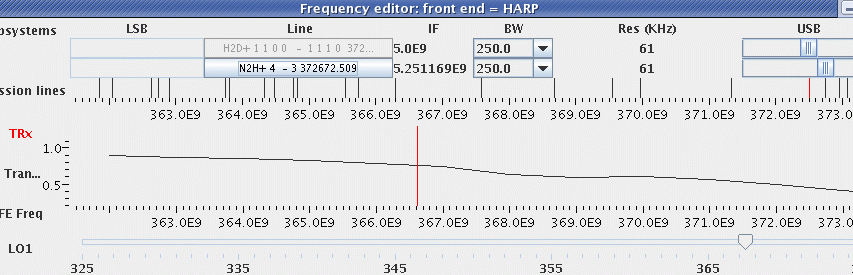
The frequency editor tool is particularly useful when trying to configure the backend for multiple lines, multiple resolution windows, or for receivers operating in dual sideband mode, where two differing sky frequencies end up with the same IF frequency. In each of these cases finding the correct values for the setup of each window is tricky and the visual presentation from the frequency editor is indispensable, if only to verify the setup. The tool now handles multi-spectral window selection and can be used interactively in choosing observing frequencies and bandwidths for each window or in combination with special ACSIS configurations, or simply to check the atmospheric opacity at the observed (or sideband) frequency. Before clicking the 'Show Frequency Editor' button, please make sure to select the desired number of spectral windows under 'Sp. Regions' (See above). Once inside the frequency editor, the frequencies and bandwidths can be selected or adjusted.
Working roughly from top to bottom, left to right, in the example above showing only one Spectral Subsystem (USB) with two spectral windows, we see:
Among the dynamic functions, we find that:
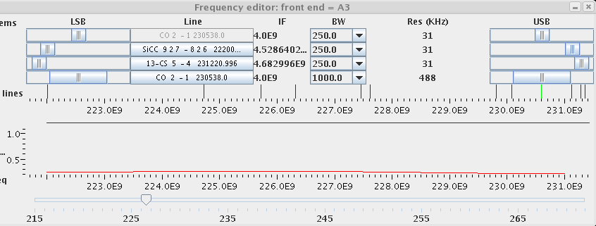
The above example shows a setup with three 250 MHz windows and one, lower resolution, 1000 MHz window for receiver A (for HARP only two windows are possible). Of the 250 MHz windows, one is centered on a line in the LSB, two on lines in the USB. The line identifier for the top window is greyed out because it corresponds to the observing frequency specified in the main Het. Setup component and it 'anchors' all windows. Moving the slider of the top window will also slide all other windows. By contrast the remaining three windows can be moved independently from one another within the IF band.
To generate such a multi-line, multi-Subsystem configuration:
Note that the movement of the sliders will make for configurations that may not be easily repeatable and that use of the 'Special Configurations' is desirable. If you have a multi-line configuration that you consider astrophysically important — and which may be useful for either yourself or others later on — please contact the JCMT staff and request that it become one of the available 'Special Configs'. Our (CADC) database will then be a lot simpler to manage and search if everyone using this combination of lines uses precisely the same configuration.
Note: Please make sure that the window is anchored on a line if it is intended to be centered on that line. While the observation will proceed with a 'no line' label, the line identification is important for archival purposes.
You can skip this section if you want because you don't have to use the position editor, but it can be very useful, for example in picking a good chop position. Click on the "Plot" button at the bottom left of the "Target Information" component:
A whole new window will pop up — this is the position editor. Looks a bit boring at the moment though, with just a small green cross-hair in the middle. Let's make it a bit more interesting — go to Catalog menu and into the Image Servers item and chose a Digital Sky Survey near near you:
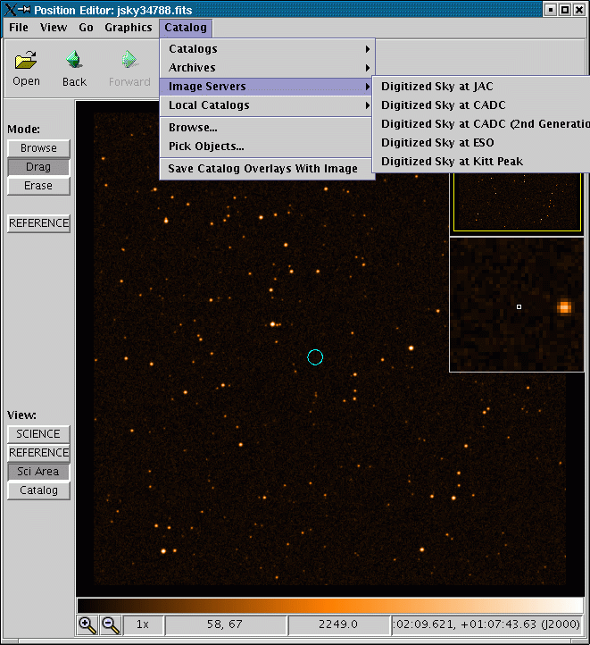
It's now full of stars. The display application, by the way, is based on JSky, for those familiar with it.
If you're having problems with the position editor, the most likely explanation is that your version(s) of JRE, JAI and/or Java may not be sufficiently up-to-date; check the software installation page for more information. If you are behind a firewall, you may need to check your proxy server settings.
The DSS may not be the most useful survey for planning sub-millimeter observations, but you can read in any FITS image with an appropriate WCS header using Open under the File menu. You can also fetch a FITS image over the Web. The screen shot below shows the SCUBA commissioning scan map of W48 (image courtesy Tim Jenness). If you have an Internet connection, go to the File menu, select "Open URL...:" and type in the following URL: http://www.eaobservatory.org/JCMT/observing-tool/example/w48.fits or download the image by clicking on the link and and use File→Open to read it in. Notice that the RA/DEC position fields of the target component must be set reasonably near to the world co-ordinate of the FITS file otherwise the image may not load properly.

You will then see the DSS image replaced with the sub-millimeter image.
A short technical note if you are planning on generating your own image for import: if you want to import a SCUBA map in NDF format, convert it to FITS by using the Starlink convert utility with the following arguments:
ndf2fits encoding=FITS-IRAF bitpix=32 comp=DIf you have difficulty despite doing this, let us know.
As was mentioned before, the green cross-hair is the position of your science co-ordinates. Click on the button on the left side of the position editor entitled "Sci Area". The circle that is drawn is the HPBW of the chosen heterodyne receiver.
Now for the useful thing mentioned earlier: While leaving the position editor window open, go back to your science program window and click on your chop iterator that is inside your science observation. Now look at the position editor. The chop beams and the area in which they will rotate during integration are drawn. Well, that's no good — we're chopping onto bright stuff!
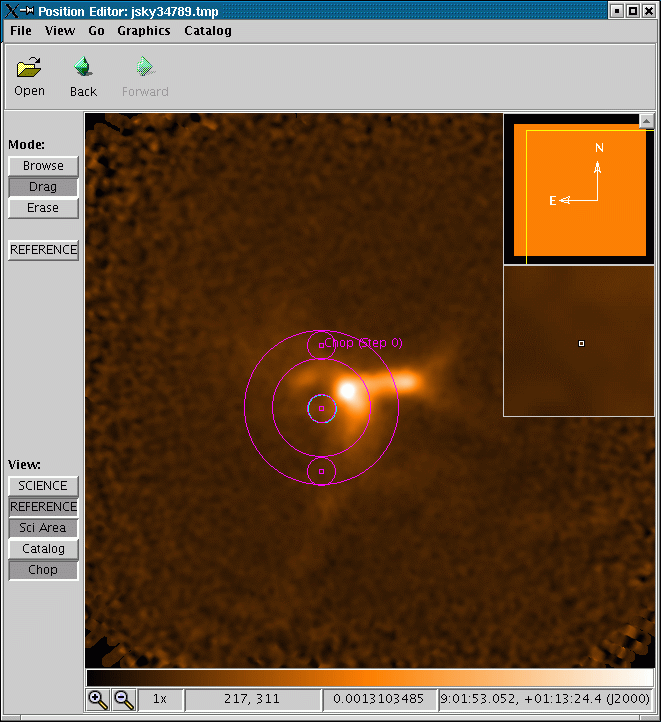
This is where the position editor comes into its own. We are going to use it to specify where exactly we would like to chop. In the chop iterator, use the drop down menu to change the chopping co-ordinate frame from AZEL to TRACKING (i.e. RA/DEC). You will notice that in the position editor the uncertainty circles have disappeared, since we will always chop in the same position in the sky:
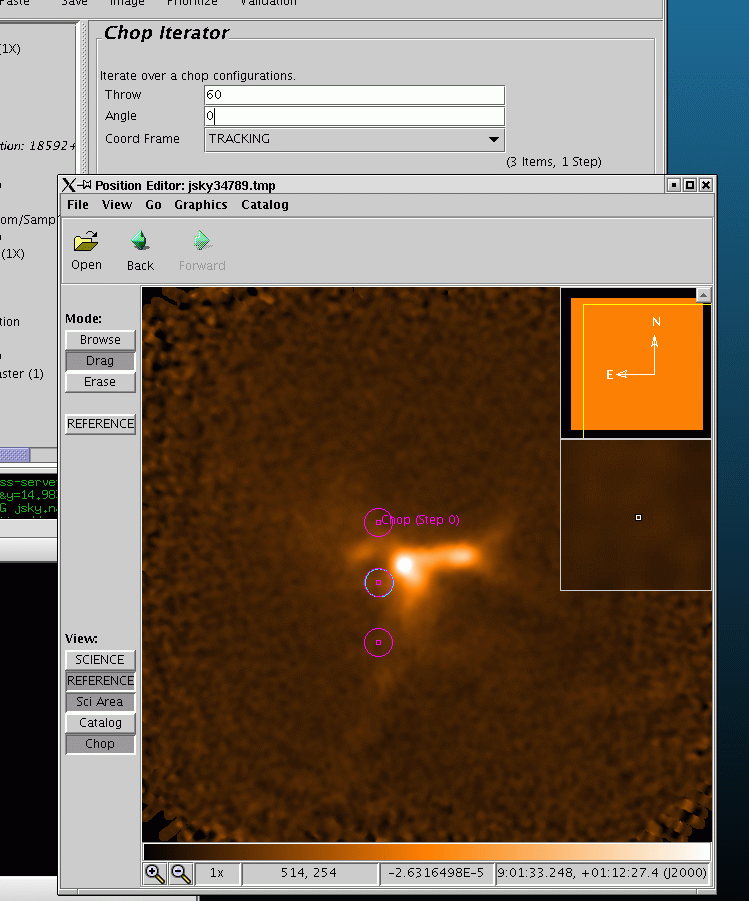
Now back in the position editor, click on the Drag button on the upper left side of the window. Then click on the center of one of the chop beams in the display and drag it away from the emission:
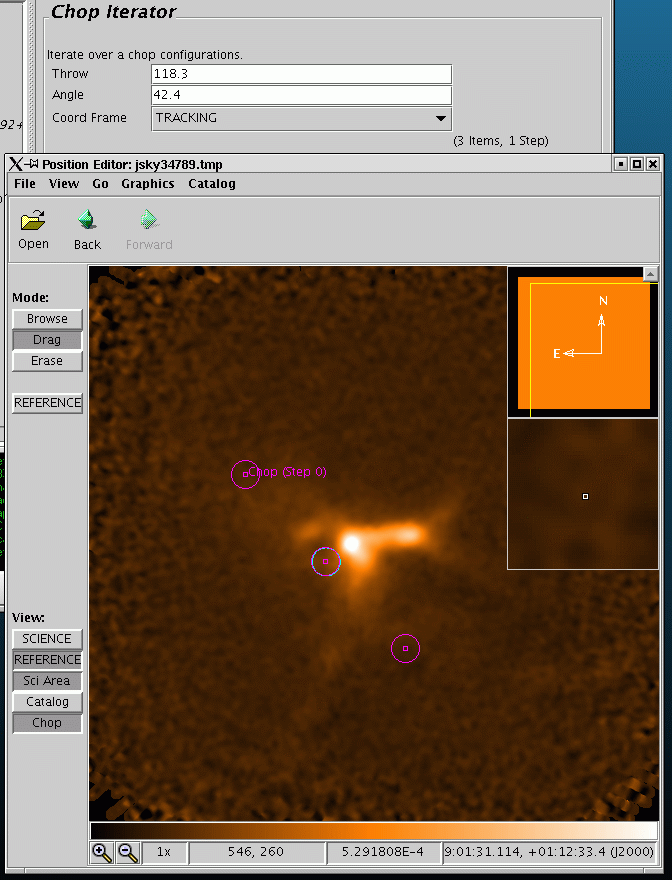
You will note that the values in the chop iterator have automatically changed to reflect the new chop throw and angle values. Remember that by default, any calibrations for your observations will be performed with the same chop as the science observation.
You can also click on the target component and use Drag to change your science co-ordinates if you wish.
It used to be that the receiver tuning, including the source velocity, were specified in the Heterodyne Component while the source coordinates needed to be entered in the Target Component. Half of our observers were very happy with this, since they preferred to observe all their sources with the same receiver setup. The other half of the observers complained bitterly since they wanted to be able to read in the sources and velocities from a catalog and center the bandpass for each.
Hence the OT now allows for the observing velocity to the specified in the Heterodyne Component or the Target Component. But this has made life a bit more complicated.
The description of the Heterodyne Setup component should have made it clear that it uses the velocity to compute the approximate sky frequency as a check whether the line falls within the tuning range, to show the setup in the frequency editor etc. However, it can only do that if it has access to the velocity information. In the case where the velocity information has been put in the Target Component, this requires the components to be at the same level of indentation. If this is not the case, the Het. Component will assume a velocity of 0 km/s.
Note that is only a problem within the OT: when MSBs are submitted for observation the tree structure from the OT is unrolled and for each observation the appropriate Het Setup and Target Component are paired up.
In general, this is not a problem for Galactic sources since the overall parameters of the observation of a molecular line (center frequency, atmospheric transparency, receiver characteristics) don't significantly differ from source to source. That of course may not be the case for extra-galactic and high-z sources: vary the velocity or red-shift enough and the line may shift completely out of the band or into an atmospheric absorption line for some of the sources (it has happened!). The "Het Setup" component will notify you of (un)available transitions for a particular molecule and the Frequency Editor will show the transmission at the observing frequency, but only if it can find the velocity of the observation.
Small print: which is one of the reasons that we advice to always select a 'Molecule' and 'Transition' from the drop-down list, rather than typing a frequency manually.
In summary, the following sample layouts allow for the Het. Component to obtain the velocity from the Target Component:
*MSB *MSB *AND
o Het Setup o Site Quality o Het Setup
o Site Quality o Observation o Site Quality
o Target Information - Het Setup o Target Information
o Observation - Target Information o MSB1
- Sequence - Sequence - Observation
... ... + Sequence
...
o MSB2
...
In the following samples the Het. Setup will not be able to access the velocity:
*MSB *MSB *AND
o Het Setup o Site Quality o Het Setup
o Site Quality o Target Setup o Site Quality
o Observation o Observation o MSB1
- Target Information - Het Setup - Target Information
- Sequence - Sequence - Observation
... ... ...
o MSB2
- Target Information
...
The JCMT telescope operators will insert calibrations, pointings, foci, etc. into the observing sequence as appropriate. Without any specific instructions in the science program calibrations will be carried out by observing a 'standard' line in a suitable calibration source.
PIs are strongly advised to, at a minimum, add instructions and wishes regarding calibrations in the Calibration Note to the telescope operators and observers. A sample note has been included with the library templates. For information on standard sources, lines, and observational setup, please see JCMT Heterodyne Standards. Please be aware that the sub-mm positions for calibrators as used at the JCMT may differ substantially from the the ones in archives such as SIMBAD.
There are several options for calibrations and ways to customize them:
No special calibration MSBs provided in the Science Program.
The calibrations will be carried out on a suitable calibration source selected by the telescope operator at a 'standard' frequency, possibly different from MSB tuning or redshift. For many applications, this is the most appropriate option.
A number of separate calibration MSBs on suitable targets included in the science program.
These MSBs must be clearly identified as calibrations in their title. Typically the set of calibration MSBs should cover the RA-range of the science observations to ensure that at least one calibration MSB is available at any time. PIs can customize the "Het Setup" component but need to take care to pick an appropriate switching scheme for each calibrator chosen. The telescope operator will insert the calibration MSBs into the observing queue as needed and per instruction in the science program.
The ACSIS library has a set of special template MSBs for a position-switched, beam-switched, or scan calibration. The MSBs start with a series of (optional) pointing and focus observations. The calibration itself is a regular observation that has been marked as a calibration. Configure the "Het Setup" and "Target Information" components to customize the calibration for your project. Typically choose either a position-switched, beam-switched, or scan calibration, depending on the selected calibration target (many of which require a position switch). Observational details for the calibrators can be found on the JCMT Heterodyne Standards page. The calibration MSBs should be added to the science program with a high priority (low number) and high repeat counter to ensure that they will come up prominently and repeatedly in the JCMT Query Tool.
Calibration observations as part of the science MSBs.
Embed the calibration observation of a specific standard source and line in your science MSB by copying and pasting the desired components from the calibration template described above under option 2 (please read those instructions). The MSB should look like:
-------------------------
MSB
...
Het setup
Science Target
Calibration Observation (marked as Calibration)
Science Observation
-------------------------
Please be aware of inheritance: in the example above you will need to add another "Target Information" component inside calibration observations with the coordinates and offsets of the calibrator! Likewise, if the calibration needs to be done at a different frequency, another "Het Setup" component needs to be added inside the Calibration Observation. This will result in the appropriate re-tune between the calibrator and the science target. This should not be done for the manually tuned RxW. WARNING: If you include a calibration observation in this manner, both your target and calibration source must be observable before the MSB can be scheduled, which can severely restrict the night-time available to the project in case of an unfortunate combination of calibration and science targets.
Issues to consider regarding calibrations may be:
How important is a precise calibration? For many projects it is sufficient to ensure that the telescope and receiver are operating within their specifications.
Can the calibration be done at a 'standard' frequency, possibly different from MSB tuning or redshift? Or should the calibration be done with the "Het Setup" component of the science observation and, if not close to a standard frequency, should a line-rich source be selected that will allow for the relative calibration of observations from night to night?
Can the calibration be done using a different bandwidth than the science observation? Is an increase in bandwidth allowed to catch a nearby standard line? Increasing the bandwidth should not affect the calibration, except that the peak of very narrow lines will drop because of the lower resolution.
Is it important to observe a planet? Can this be done at one of the standard frequencies or should the "Het Setup" component from the science MSB be used? Efficiencies derived from isolated observations of the continuum level of planets are typically not very accurate.
When you observe with HARP, the telescope control system will select the array orientation from a series of allowed angles with respect to the area being mapped. For jiggle and grid (including stare) observations, the array could normally be oriented at 0, 90, 180 or 270 (-90) degrees to your map area.
If your program requires that you control the orientation of the HARP array, you can use the "Rotator Angles" checkboxes on the Jiggle or Stare panel. If you select any angles here, then the TCS will choose from the angles you have selected. Otherwise — if you leave all of the angles unselected — the observing sofware will automatically generate a list of possible angles.
For more information about the HARP K-mirror, please see the HARP K-mirror information page.
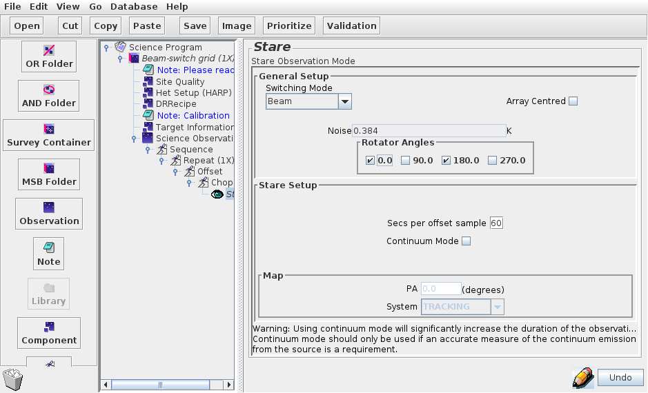